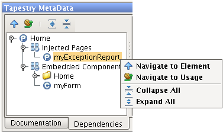

| Dependencies |
|
|
This tab shows the Tapestry elements that the selected element uses (on tab left side). This includes:
This information includes:
The node Embedded components have all the Embedded components declared in the class and in the templates, the Embedded components in templates are in folders with the name of template were they are embedded. |
|
In this tab you can use all the option declared in Tapestry MetaData, with right click in Tapestry component.
 |
| Navigate to Element |  |
Navigates to the selected element class. |
| Navigate to Usage |  |
Navigates to the place where the selected element is being used. |